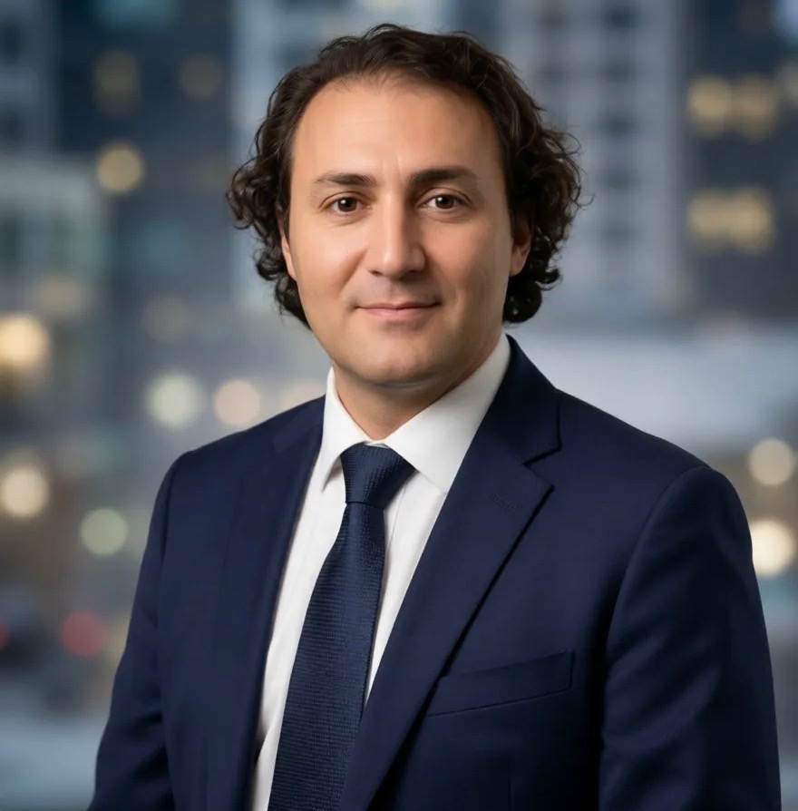

PhD Candidate in Civilizational Studies
Ibn Haldun University, Istanbul
Biography
Shahzada Rahim Abbas is a PhD Candidate in Civilizational Studies at the Alliance of Civilizations Institute (MEDİT), Ibn Haldun University in Istanbul, Türkiye. His scholarship bridges historical inquiry and contemporary structural analysis, examining how states, educational institutions, and economic systems evolve under shifting global power dynamics.
Holding a Master of Arts in International Relations (GPA 3.95, Department Distinction) from Erciyes University and a Bachelor of Science (Gold Medalist) from International Islamic University, Islamabad, he focuses on great-power competition, Eurasian and Arctic geopolitics, hybrid security, and regional economic development.
Core Research Areas
- Geopolitics & Global Power Shifts: Transitions in international order, Eurasian integration, Arctic geopolitics, hybrid warfare, and multipolarity.
- Political Economy & Geoeconomics: Macroeconomic dynamics, energy transition, Belt and Road infrastructure initiatives (BRI), and regional development.
- Historical State Governance & Educational Policy: State-building, legal philosophy, administrative reform, and institutional education frameworks.
- Civilizational Studies & Theory of History: Civilizational encounters, critiques of Eurocentrism, conceptual history (Begriffsgeschichte), and historical periodization.
Books & Monographs
Peer-Reviewed Journal Articles
2026
2025
2024 & Earlier
Curriculum Vitae
Education
GPA: 3.95 / 4.00 (Department Distinction; CGPA 3.72)
Thesis: Geopolitics of the New Great Game – A Comparative Study of Great Powers' Pivot Towards Central Asia
GPA: 3.89 / 4.00 (Gold Medalist, Highest Achiever)
Professional Experience
Honors, Scholarships & Certifications
- Online Certification Course: AI, Justice, and the Rule of Law — Saïd Business School, University of Oxford (2026 – Present)
- Certificate in Specialised Training Programme on Muslim Minority Studies (16 weeks / 48 hrs): Migration Research Foundation (GAV Akademi), Türkiye (Oct 2025 – Apr 2026)
- Department Distinction: Highest Achiever, Master's Degree in International Relations, Erciyes University (2024)
- Turkish Government Scholarship (YTB / TBBS): Full Master's funding (2021 – 2024)
- Gold Medalist: Highest Achiever, Faculty of Social Sciences, International Islamic University, Islamabad (2019)
- Certificate in Russia–European Relations: University of Tartu, Tallinn, Estonia (2019)
Skills & Languages
- Quantitative & Statistical Analysis: SPSS & Stata (Advanced), Python & MATLAB (Beginner)
- Languages: English (C2), Turkish (C1), Hindi (C1), Urdu (C1), Arabic (A2)
Contact & Academic Profiles
For academic inquiries, research collaborations, or speaking invitations, please reach out via email or connect through the scholarly platforms below:
- Email: abbas.hashmi63@gmail.com
- Phone: +90 552 861 6438
- Affiliation: Alliance of Civilizations Institute (MEDİT), Ibn Haldun University, Istanbul, Türkiye
- ORCID: 0000-0002-9242-5131
- Scopus Author ID: 59420346400
- Web of Science ResearcherID: GWM-5854-2022
- LinkedIn: linkedin.com/in/shahzada-rahim-6783a29a